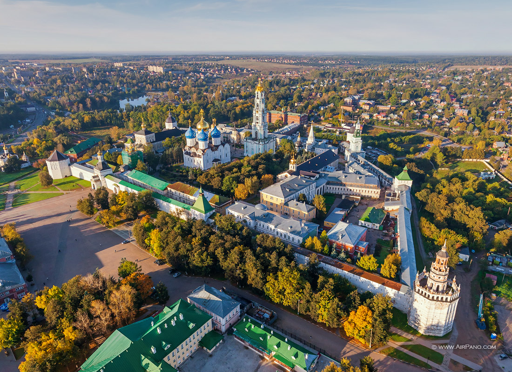
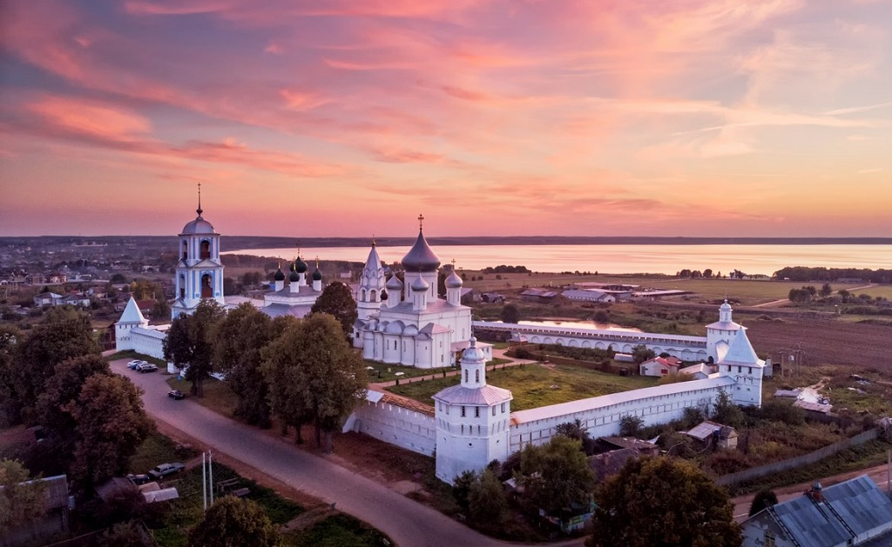
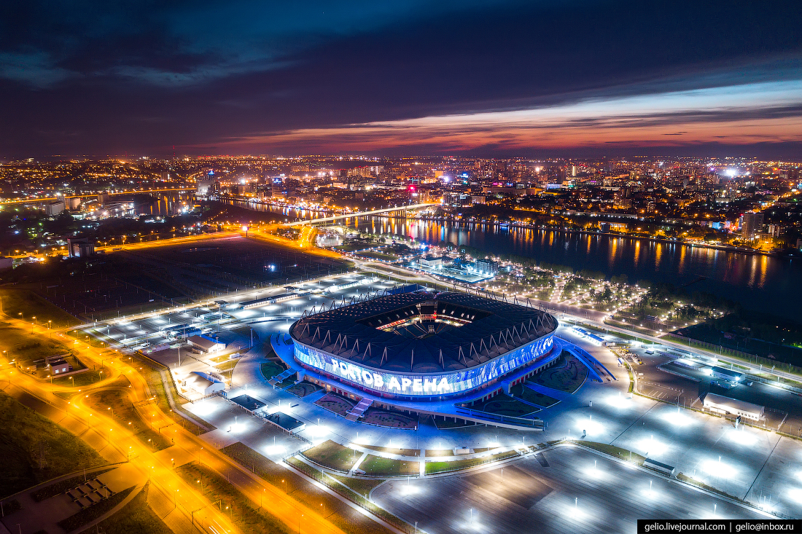
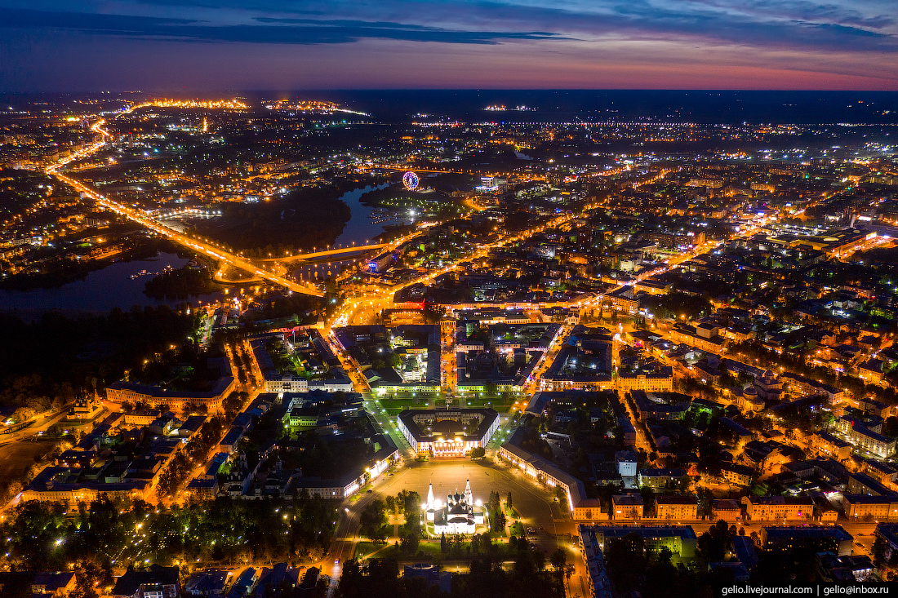
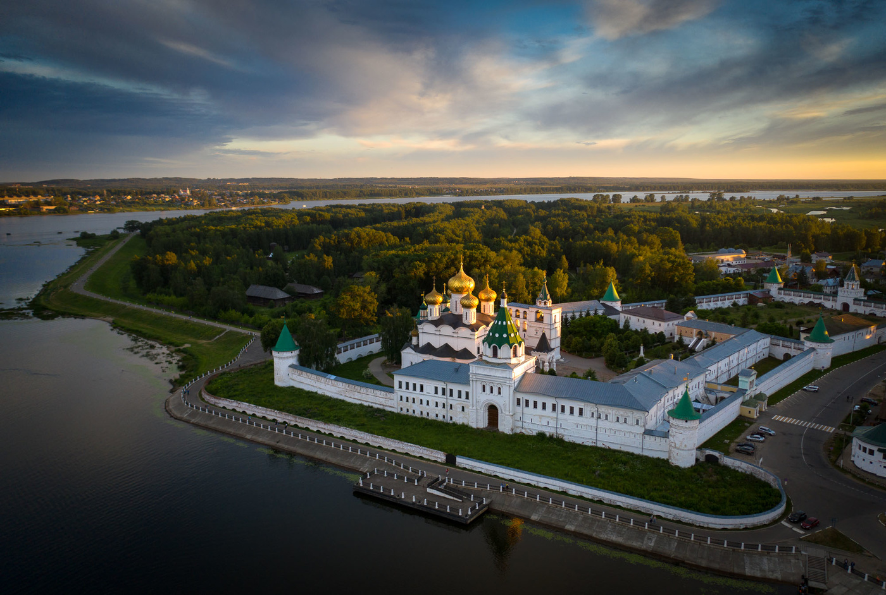
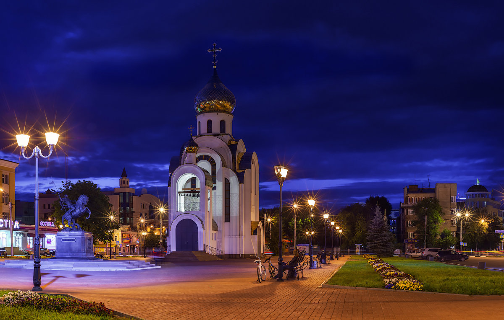
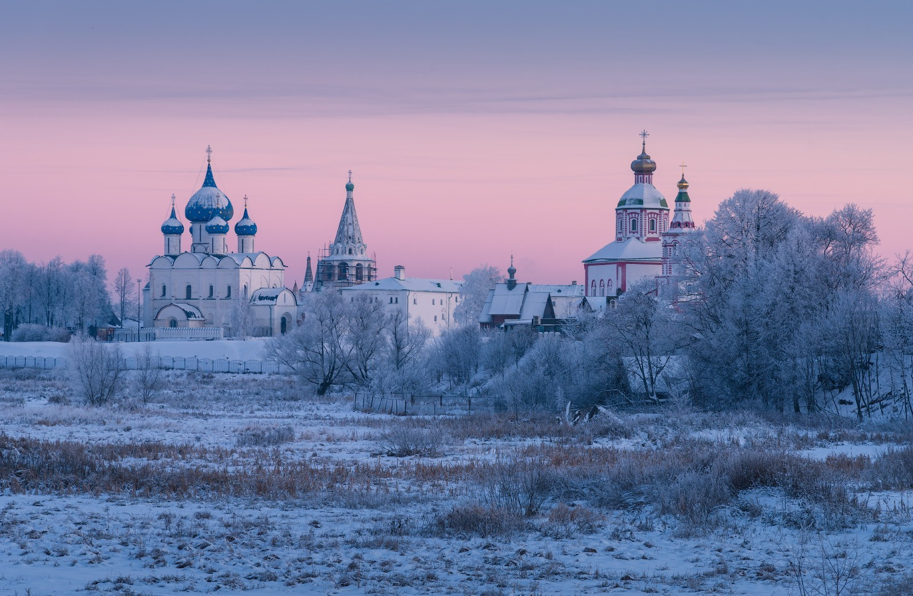
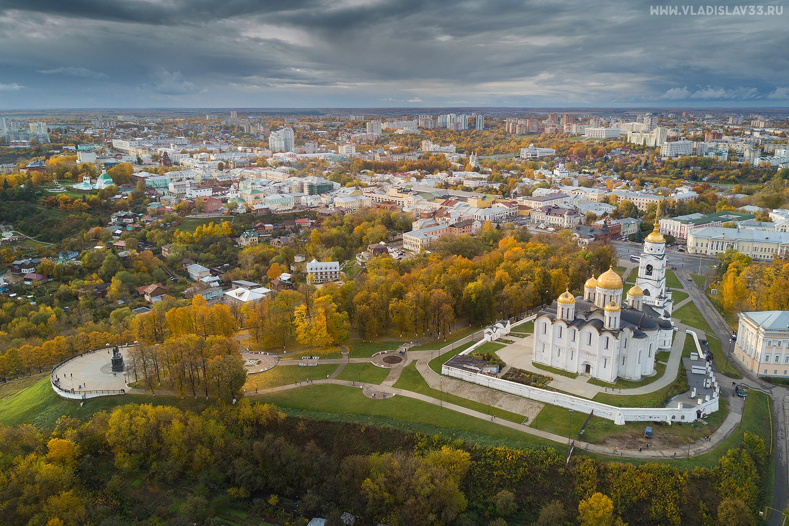

Тур по Золотому кольцу России
Программа тура
- Отъезд из Москвы во Владимир. Путевая информация. Прибытие группы во Владимир. Обед. Экскурсия по Владимиру с осмотром и посещением памятников архитектуры XII века: Успенского и Дмитриевского соборов, Золотых ворот. Музей стекла, хрусталя, лаковой миниатюры и вышивки. Экскурсия в Боголюбово: церковь Покрова-на-Нерли, действующий женский монастырь. Отъезд в Суздаль. Размещение в гостинице. Ужин.
- Завтрак. Экскурсионная программа по Суздалю с посещением музеев кремля с Крестовой палатой, Спасо-Евфимиевского монастыря (колокольные звоны, СпасоПреображенский собор), музея деревянного зодчества. Обед. Отъезд в Кострому. Размещение в гостинице «Волга». Ужин.
- Завтрак. Экскурсия по Костроме с посещением Ипатиевского монастыря. Обед. Сво- бодное время. Ужин.
- Завтрак. Отъезд в Ярославль. Размещение в гостинице «Юбилейная». Экскурсионная программа по городу с посещением Преображенского монастыря. Обед. Посещение частного музея «Музыка и время» Ужин.
- Завтрак. Отъезд в Ростов Великий. Экскурсия по кремлю с посещением переходов и экспозиции финифти. Отъезд в Переславль-Залесский. Обзорная экскурсия по Пере- славлю с посещением Красной площади. Обед. Отъезд в Москву.
Города которые входят в тур
Сергиев Посад
Сергиев Посад — столица православия и один из восьми городов, входящих в туристический маршрут «Золотое кольцо России». Сюда едут, чтобы ощутить дыхание древней истории и познакомиться с уникальными памятниками архитектуры. В списке обязательных к посещению достопримечательностей — Троице-Сергиева лавра, святые источники, тематические музеи, городской парк, старинные усадьбы и многое другое.
Читать далее...Переславль-Залесский
Переславль-Залесский – cтаринный город, расположившийся на полпути из Москвы до Ярославля, в 140 км от столицы России. Этот живописный уголок нашей родины, бывший в древности одним из центров Северо-Восточной Руси, сегодня является жемчужиной популярного туристического маршрута «Золотое кольцо России» и центром паломничества к православным святыням.
Читать далее...Ростов
Ростов Великий – город, летопись которого насчитывает более тысячи лет, настоящая жемчужина исторической России. Расположенный в центральной части нашей страны, в Ярославской области, всего в 53 км юго-западнее Ярославля, Ростов является административным центром одноименного района с населением около 30 тысяч человек.
Читать далее...Ярославль
Ярославль – главный претендент на звание столицы Золотого кольца России и старейший город на Волге с тысячелетней историей, чьи достопримечательности удостоились места в списке Всемирного наследия ЮНЕСКО. Несмотря на свой почтенный возраст, Ярославль не застыл в праздном великолепии и быстро подстроился под современный ритм жизни, превратившись в довольно крупный промышленный центр.
Читать далее...Кострома
Кострома – город с замечательными музеями, гостеприимными интеллигентными людьми, великолепной природой, где, кстати, родилась героиня многих русских сказок – Снегурочка, величественной Волгой и истинно русской атмосферой. Не стоит забывать и про другую значительную достопримечательность Костромы – знаменитый Ипатьевский монастырь, где 14 марта 1613 года династия Романовых была избрана Земским собором на царство.
Читать далее...Иваново
Иваново – крупный российский город, который располагается в междуречье двух крупных российских рек – Клязьмы и Волги. Примечательно, что у города есть несколько «прозвищ»: так, Иваново называют Ситцевым краем, Городом невест, текстильной столицей России, а также Русским и Красным Манчестером.
Читать далее...Суздаль
Суздаль — один из самых красивых русских городов, расположенный во Владимирской области. Суздаль – город-музей, ведь такого количества памятников истории Руси, а также дошедших до наших дней в целости и сохранности старинных строений, уникальных церквей и объектов деревянного зодчества нет нигде. Интересно, что при этом в Суздале нет ни одного промышленного предприятия, что делает его экологически чистым местом.
Читать далее...Владимир
Владимир — город и областной центр в европейской части России, он входит в число восьми городов Золотого кольца России. Древний русский город построен на левом берегу реки Клязьмы, в 190 км к востоку от Москвы. Во Владимире живет около 350 тыс. человек. Город с тысячелетней историей является крупным туристическим центром и привлекает путешественников из России и из-за рубежа.
Читать далее...